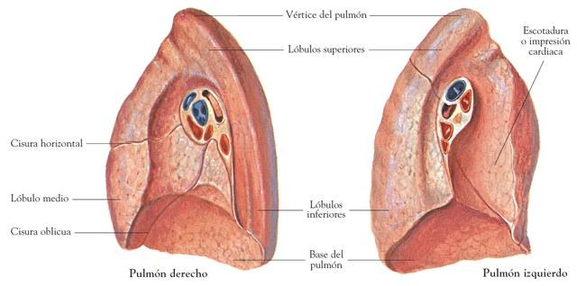
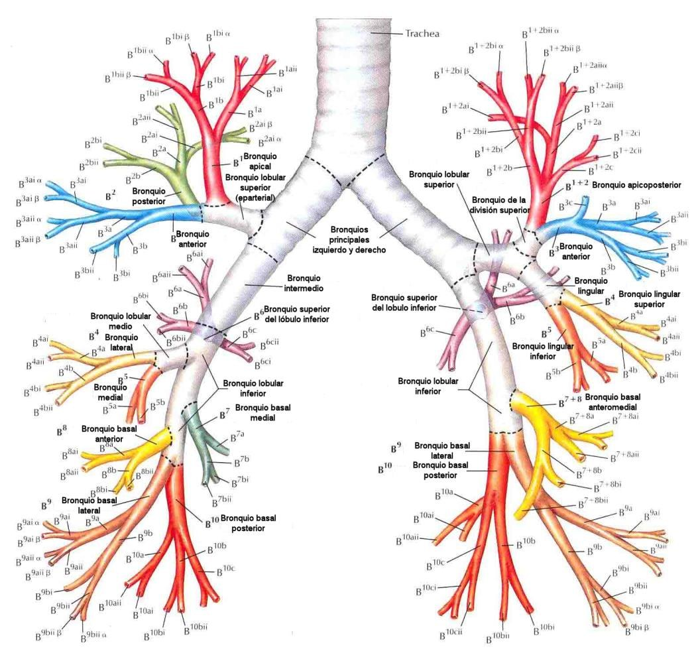
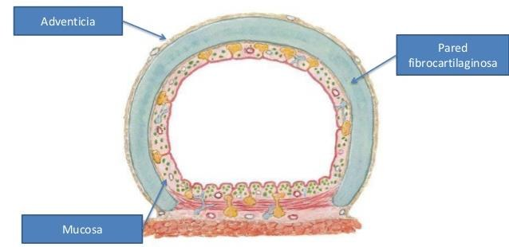
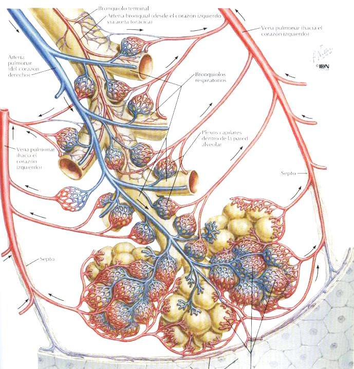

ClinicusMed · Dossiê Clinicus — Padrão de Excelência
Os pulmões são órgãos pares, situados no tórax, um de cada lado do mediastino. Apesar de pares, não são simétricos — o direito é maior que o esquerdo (para acomodar o coração, que se projeta mais para a esquerda).
| Característica | Direito | Esquerdo |
|---|---|---|
| Volume | Maior | Menor |
| Peso absoluto | ~600 g | ~500 g |
| Lóbulos | 3 (superior, médio, inferior) | 2 (superior, inferior) |
| Fisuras | 2 (oblíqua + horizontal) | 1 (oblíqua) |
Peso específico: ~490 g (flutua na água quando insuflado — base da antiga "docimasia hidrostática" em medicina legal). Cor: rosado-claro. Consistência: flácida e elástica.
Cada pulmão tem a forma de um semicone, com vértice superior e base inferior.

| Face | Descrição |
|---|---|
| Costal | Lisa e convexa. Dividida pela fisura oblíqua; no pulmão direito, também pela fisura horizontal |
| Mediastínica | Côncava, apoia-se sobre os órgãos do mediastino. Apresenta o hilio pulmonar, por onde penetra o pedículo pulmonar |
| Diafragmática (base) | Côncava, apoiada sobre o diafragma |
Repare que 2 das 3 faces pulmonares são côncavas (mediastínica e diafragmática) — o pulmão literalmente "se molda" em torno das estruturas vizinhas: o coração/grandes vasos de um lado, a cúpula diafragmática do outro. Só a face costal, que acompanha a curvatura das costelas, é convexa. Essa plasticidade de forma é típica de um órgão esponjoso e complacente.
O hilio pulmonar é a "porta de entrada e saída" do pulmão, localizado na face mediastínica. Por ele passa o pedículo pulmonar:
| Estrutura | Descrição |
|---|---|
| Vértice | Parte mais alta, formado pela união das faces costal e mediastínica. Redondeado, sem limite nítido. Projeta-se na base da região supraclavicular (ver Cúpula Pleural, Cap. 16) |
| Borda anterior | Anteromedial, aguda — limita uma delgada "lengüeta" de tecido pulmonar |
| Borda posterior | Arredondada e grossa, moldada no ângulo costovertebral |
| Borda inferior (circunferencial) | Aguda e cortante |
Fisuras interlobares dividem os pulmões em lóbulos:
| Pulmão | Fisuras | Lóbulos resultantes |
|---|---|---|
| Direito | Fisura oblíqua (maior) + fisura horizontal (menor) | Superior, médio e inferior |
| Esquerdo | Fisura oblíqua | Superior e inferior |
A expansão brônquica corresponde à ramificação progressiva dos brônquios, seguindo, sucessivamente: brônquios lobares → brônquios segmentários → divisões dos brônquios segmentários.
Pensa na árvore brônquica exatamente como uma árvore de verdade: o tronco (traqueia) se divide em 2 galhos grossos (brônquios principais), cada um se divide em galhos médios (lobares), que se dividem em galhos finos (segmentares), até chegar nos "gravetos" (bronquíolos) e nas "folhas" (alvéolos). A direção geral dessa expansão é oblíqua: de cima para baixo, de medial para lateral e de frente para trás.
| Item | Descrição |
|---|---|
| Origem | Mediastino anterior |
| Trajeto | Vertical, oblíquo para baixo e para trás |
| Origina | Brônquios lobares superior, médio e inferior |
| Item | Descrição |
|---|---|
| Origem | Mediastino anterior, entre o arco aórtico e o pericárdio |
| Trajeto | Quase horizontal |
| Origina | Brônquios lobares superior e inferior |

Cada brônquio lobar se divide em brônquios segmentários, que por sua vez se subdividem ainda mais:
| Pulmão | Lobar | Segmentares |
|---|---|---|
| Direito | Lobar superior (LS) | Apical, posterior, anterior |
| Lobar médio (LM) | Lateral, medial | |
| Lobar inferior (LI) | Superior, basal medial, basal anterior, basal lateral, basal posterior | |
| Esquerdo | Lobar superior (LS) | Apicoposterior, anterior, lingular |
| Lobar inferior (LI) | Superior, basal anterior, basal lateral, basal posterior |

| Camada | Composição |
|---|---|
| Adventícia (peribrônquio) | Tecido conjuntivo |
| Parede fibrocartilaginosa | Tecido fibroelástico + cartilagem |
| Mucosa | Epitélio ciliado, com músculo liso disposto de forma helicoidal ao redor dela |

O pulmão tem, ao mesmo tempo, 2 circulações com funções completamente diferentes:
| Circulação | Função | Vasos |
|---|---|---|
| Funcional (pequena/pulmonar) | Hematose (troca gasosa) | Artérias e veias pulmonares |
| Nutrícia (sistêmica) | Nutrição do próprio tecido pulmonar | Artérias e veias bronquiais |
É crucial entender que a circulação pulmonar (artérias/veias pulmonares) NÃO nutre o próprio pulmão — ela só faz a hematose (troca de O₂/CO₂ com o sangue que vem do corpo todo). Quem efetivamente nutre o tecido pulmonar (brônquios, pleura visceral) é a circulação BRÔNQUICA, que é sistêmica (vem da aorta). É por isso que uma embolia na artéria pulmonar não necessariamente mata o tecido pulmonar local — ele ainda recebe nutrição pela circulação brônquica.
| Item | Descrição |
|---|---|
| Origem | Tronco pulmonar (que se bifurca em artéria pulmonar direita e esquerda) |
| Ligamento arterioso | A artéria pulmonar esquerda se une ao arco aórtico por esse resquício embrionário do ducto arterioso |
| Distribuição | Acompanha o árvore brônquico |
| Ramos | Seguem a distribuição segmentária dos brônquios (1 ramo arterial para cada segmento broncopulmonar) |
Seguem um trajeto de drenagem em cascata, dos capilares até o átrio esquerdo:
| Item | Descrição |
|---|---|
| Artérias bronquiais | Direita e esquerda |
| Origem | Aorta |
As redes capilares arteriais submucosas se anastomosam, formando um sistema misto: o sangue venoso proximal drena para a grande circulação (veias sistêmicas), enquanto o sangue venoso distal (bronquial) drena para as veias pulmonares.
| Item | Descrição |
|---|---|
| Origem | Periferia do pulmão |
| Drenagem (em cascata) | Gânglios lobares → gânglios da raiz pulmonar → gânglios mediastínicos |
| Término à direita | Ducto linfático direito |
| Término à esquerda | Ducto torácico |
| Inervação | Origem |
|---|---|
| Parassimpática | Nervo vago |
| Simpática | Tronco simpático |
Um caso clássico de emergência que só faz sentido se você souber a diferença anatômica entre os 2 brônquios principais — e suas implicações na dupla vascularização pulmonar.
A Clinicus selecionou este conteúdo para complementar seu estudo. Não substitui a leitura do resumo — o resumo ensina, o vídeo reforça.
Carregando recomendações...
O sistema guarda, no seu navegador, quais cards você já sabe bem e quais precisam voltar mais cedo — cada vez que você avalia um card, ele recalcula quando ele deve voltar.
10 questões, do mais básico ao mais puxado. Escolhe uma alternativa, depois clica em "Ver comentário completo" — vale a pena ler até quando você acerta, porque o comentário explica cada alternativa, não só a certa.